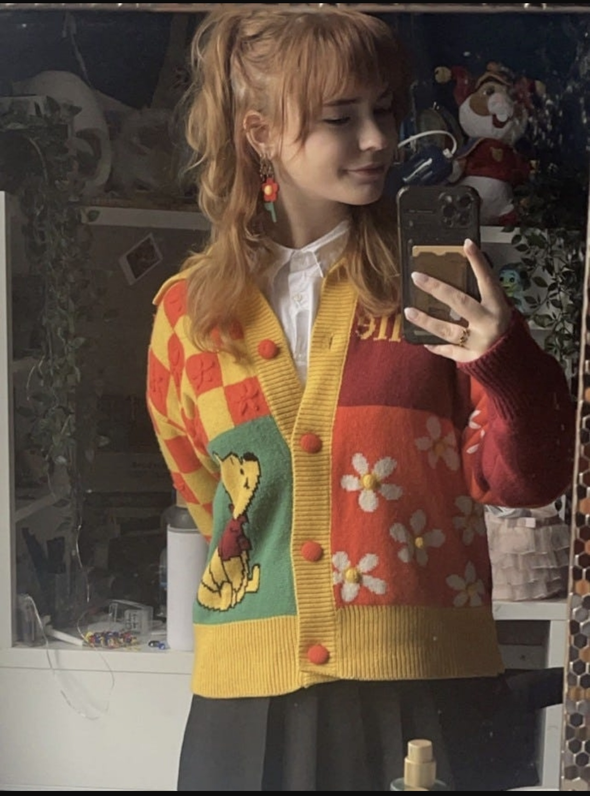

Welkom bij de Zweefgids Amsterdam! op deze website kun je alles lezen over welke naar onze mening de beste spirituele winkeltjes zitten in Amsterdam! verder kan je lezen over edelstenen onder het menukopje 'edelstenen' en tot slot kan alles over mijn mening en ervaring lezen met de gekozen winkeltjes.

Ons doel
Het doel van de Zweefgids is mensen een leuke beginners gids geven met de leukste spirituele en duurzaamste winkeltjes die zich in amsterdam bevinden, verder is het ons doel om mensen te informeren over waarom wij deze winkels de beste keuze vinden en tot slot is de website om onze ervaring en mening te delen met de winkels.
Over mij
Hey! mijn naam is Meggie ik ben een eerstejaars student aan CMD op de HVA en ik heb deze website gemaakt omdat ik zelf erg veel van spirituele winkeltjes houdt, maar nooit wist welke nou echt leuk zijn en welke winkels nou echt de moeite waard zijn om als toerist te bezoeken in Amsterdam, dus daarom heb ik deze website gemaakt om mensen de naar mijn mening leukste en duurzaamste winkeltjes te laten zien!

Contact
Email: meggieschouten@hva.nl
Telefoon: 06 00000000